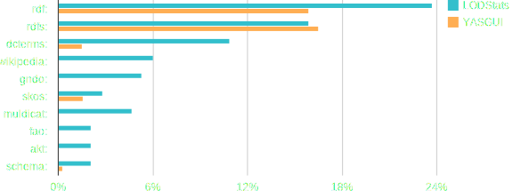

YASGUI
Feeling the pulse of Linked Data
Laurens Rietveld
VU University Amsterdam
http://presentations.laurensrietveld.nl/ekaw2014
What we (don't) know about the LOD Cloud
Strengths and weaknesses of server logs
An Observational Lense

YASGUI Feature-set
- Access to any SPARQL endpoint
- Auto-completion
- Syntax Highlighting
- Full SPARQL 1.1 syntax support
- Full SPARQL query results support
- Syntax Checking
- Platform independent
- Retention of user settings
- Easily bookmark and share queries
- Easily search for endpoints
- Downloading results
Latest Numbers
- Tracking information of 57% of the user base
- 80.000 queries
- 4.600 users
- Executed on ~600 endpoints
Completely different than server logs
The Basics

We write complex queries
Exploiting endpoint logs
Open vs. Closed LOD

We only use a fraction

Namespaces
Popularity
| Namespace | Ding et al. [1] | prefix.cc | YASGUI |
|---|---|---|---|
| rdf: | 1 | 2 | 2 |
| foaf: | 2 | 3 | 6 |
| dc: | 3 | 5 | 10 |
| rdfs: | 4 | 6 | 1 |
| admin: | 5 | 39 | none |
| rss: | 6 | 9 | 251 |
| vcard: | 7 | 32 | 20 |
| bio: | 8 | 52 | none |
Popularity vs. Frequency
Conclusions
- Unique observational lens
- More than usage analysis alone